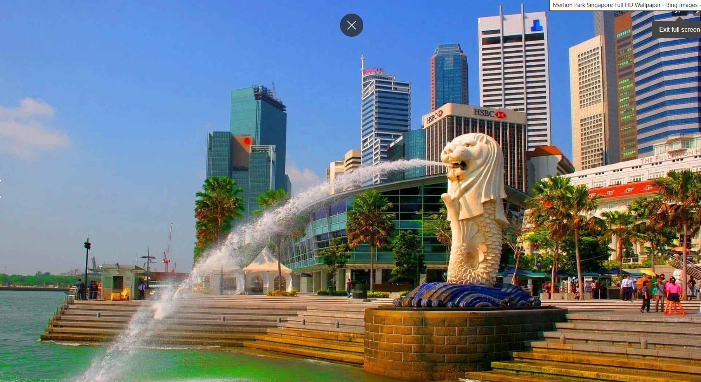

Merlion Park[a] is a famous Singapore landmark and a major tourist attraction, located at One Fullerton, Singapore, near the Central Business District (CBD). The Merlion is a mythical creature with a lion's head and the body of a fish that is widely used as a mascot and national personification of Singapore. Two Merlion statues are located at the park. The original Merlion structure measures 8.6 meters tall and spouts water from its mouth. It has subsequently been joined by a Merlion cub, which is located near the original statue and measures just 2 metres tall.
